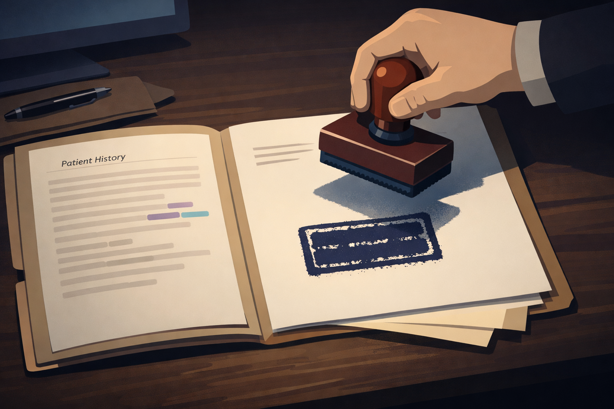
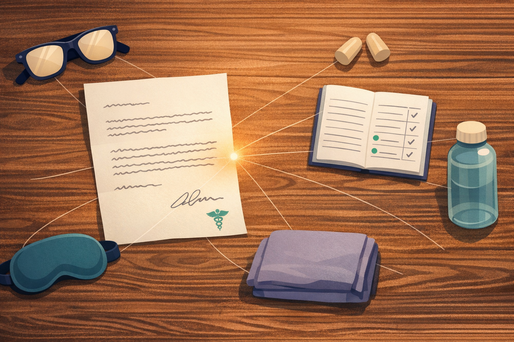

By Rustam Iuldashov
30 years lived experience with chronic migraine | Sources: 18 peer-reviewed references including Annals of Emergency Medicine, Headache / AHS Guidelines (2025), Neurology (n=8,219) | Last updated: March 2026
Medical Review: This content is based on 18 peer-reviewed sources including Annals of Emergency Medicine, Headache, Neurology, Western Journal of Emergency Medicine, PLOS ONE, and the 2025 American Headache Society guidelines.
Important Notice: This article is for informational purposes only and does not replace professional medical advice. Always consult a healthcare professional before starting or changing any treatment.
Key Takeaways
- Emergency departments are designed to prevent death — migraine is structurally deprioritized, and this creates real barriers that are not personal
- The “drug-seeker” stigma emerged from the opioid crisis and now falls hardest on migraine patients; the 2025 AHS guidelines explicitly advise against opioids for migraine in the ER[7]
- Women with migraine face compounded disadvantage: gender bias in pain assessment layers onto existing migraine stigma[11][12]
- Thunderclap headache, new neurological symptoms, fever with stiff neck, or status migrainosus (72+ hours) are never a cost question — go immediately
- Evidence-based ER treatment includes prochlorperazine IV, metoclopramide IV, ketorolac IV, and nerve blocks — not opioids[7]
- Prepare in advance: doctor’s letter with your personal Migraine Cocktail Protocol, full medication list, comfort kit, and an advocate
- Use neurological and functional language — not pain-relief language — when explaining why you’re there
You Made It This Far
You didn’t go to the ER because you were dramatic.
You went because you’d been vomiting for two days. Because the pain had stopped being pain and started being weather — a total climate you were trapped inside. Because your usual medications did nothing, then more of nothing, and at some point in the dark you realized you couldn’t get through another night alone with it.
You put on sunglasses. You asked someone to drive. You wrapped something around your head because the light through the car window felt wrong in a way you can’t describe to someone who’s never had a migraine.
And then the triage nurse said “migraine?” — and something shifted in the room.
It wasn’t your imagination. The American Migraine Foundation documents it plainly: patients with migraine in emergency rooms are “sometimes greeted with hostility instead of empathy,” accused of inventing their condition to score medication.[3] Patient accounts go further — records marked DRUG SEEKER without the patient’s knowledge, nurses suggesting that an IV antihistamine was requested for the high, doctors standing in doorways watching someone writhe and saying, calmly, “sometimes we just can’t give them what they want.”[9]
You deserved better. Understanding why this happens — and what to do about it — starts with one uncomfortable truth about the place you came to for help.
The ER Was Not Built for You
Emergency departments have one job: prevent death.
Not manage chronic conditions. Not treat pain that isn’t immediately fatal. Not provide the kind of thoughtful, individualized care a headache specialist might offer. Their protocols exist to identify what will kill you in the next few hours — heart attacks, hemorrhages, strokes, sepsis — and stop it.
Migraine won’t kill you. That’s the fundamental mismatch.
When you arrive with a migraine attack, you’re entering a system that genuinely wasn’t designed for what you have. The staff aren’t necessarily cruel. Many are exhausted, working under impossible patient loads, and trained to triage by mortality risk. Migraine scores low on that scale, regardless of what you’re experiencing.[4] One ER physician described the dynamic honestly: once it’s determined a patient doesn’t need intervention to survive, the instruction becomes “follow up with primary care or a specialist.”[5]
That’s not a moral failure. It’s a structural one. And it explains almost everything about what migraine patients experience in emergency departments — the waits, the skepticism, the sense of being an inconvenience in a room built for other emergencies.
The problem isn’t just stigma. The ER simply isn’t set up to help you the way you need to be helped.
How the “Drug Seeker” Label Was Born
For decades, opioids were the standard ER treatment for severe headache. Morphine. Hydromorphone. Meperidine. They were handed out freely — and predictably, headache became the second most common symptom among patients seeking opioids for non-medical reasons, behind only back pain.[6]
The opioid crisis arrived. Emergency medicine braced. And in the defensive crouch that followed, “drug seeker” became an informal diagnosis — one that attached itself most readily to patients who most frequently presented with invisible, hard-to-verify, severe pain.
People with migraine.
Here is the sharpest irony of all: the 2025 American Headache Society guidelines now state that IV opioids — specifically hydromorphone — must not be offered for migraine in the emergency department.[7] Not because they’re addictive. Because they don’t work. They provide less relief than antiemetics, extend ER stays, and are directly associated with higher rates of repeat visits and medication overuse.[8] The very drugs that triggered mass suspicion are now officially contraindicated.
The science moved on. The suspicion didn’t.
The opioid crisis created stigma that outlasted the evidence — and migraine patients still carry it
The Gender Tax
Migraine is three to four times more common in women than in men.[10] And research is increasingly clear that women’s pain is systematically undermanaged in emergency settings.
A 2023 review by the American Medical Women’s Association found that women’s pain is consistently underestimated and dismissed — regardless of the treating physician’s gender — and that women are far more likely to receive antidepressants than analgesics for the same presenting pain.[11] Women are also more frequently “under-triaged,” their conditions coded as lower priority, leading to longer stays and worse outcomes.[11]
For migraineurs — a predominantly female population, presenting with an invisible condition, often appearing outwardly composed even in severe pain — this bias lands on top of existing stigma like a second weight. This is medical gaslighting compounded by gender. Dismissed because it’s “just a headache.” Dismissed, also, because of who you are.[12]
The data makes this structural, not anecdotal: 85% of participants in migraine clinical trials are women, yet until recently, almost no research examined sex-specific differences in treatment response.[12] The field was built on data about women and applied without thinking too hard about what that means.
What Good Care Actually Looks Like
Before you walk into an ER, know what evidence-based migraine treatment there looks like. Not so you can demand specific medications — but so you can recognize good care when it’s offered, and gently redirect when it isn’t.
The 2025 American Headache Society guidelines establish a clear hierarchy:[7]
Must Offer — Level A Evidence
- Prochlorperazine IV — a dopamine antagonist that treats both pain and nausea. The single best-supported intervention for acute migraine in the ER
- Greater occipital nerve block (GONB) — local anesthetic injected at the base of the skull. Fast-growing evidence base, increasingly available
Should Offer — Level B
- Metoclopramide IV — another dopamine antagonist, typically paired with IV fluids
- Ketorolac (Toradol) IV — an NSAID administered intravenously for faster onset
- Subcutaneous sumatriptan — most effective if given early in the attack
May Offer — Level C
- Dexamethasone IV — corticosteroid used to prevent recurrence in the 24–48 hours after discharge
Must NOT Offer — Level A
- IV hydromorphone and other opioids — contraindicated for migraine. Less effective, longer stays, more repeat visits[8]
If a doctor reaches for opioids, you can say: “I’ve read that opioids aren’t recommended for migraine anymore. Could we try prochlorperazine or metoclopramide instead?”
That’s not a confrontation. It’s a medically grounded question — the kind that signals an informed patient, not a difficult one.
When You Must Go. No Negotiation.
In the United States, an ER visit can cost thousands of dollars — with or without insurance. That financial reality is why so many migraine patients wait too long, hoping the attack breaks on its own. That calculation makes sense for a typical attack. But if you are experiencing a thunderclap headache, new neurological symptoms, or a migraine that has not broken in 72 hours — cost cannot be the deciding factor. This is a question of survival, not a question of your deductible.
The critical concept is thunderclap headache — a headache that reaches maximum intensity within seconds, like a sudden detonation.[13] This is nothing like the gradual build of a typical migraine. In research studies, thunderclap headache is caused by subarachnoid hemorrhage — bleeding around the brain — in 11 to 25% of cases.[14] Other vascular emergencies account for many more.
⚠️ When to Seek Emergency Help Immediately
These symptoms require emergency evaluation — even if you have had migraine for decades, even after past ER visits that went badly. Do not use this article to self-diagnose.
Go to the ER or call 911 immediately if you experience:
- A headache that hits full force within seconds — the “thunderclap,” unlike any build you’ve felt before
- “The worst headache of my life” — especially if it feels genuinely different from past attacks
- New neurological symptoms: weakness, numbness, trouble speaking, vision loss, confusion, facial drooping
- Headache with fever and stiff neck (possible meningitis)
- Headache following head trauma
- Headache during pregnancy or postpartum with high blood pressure or vision changes
- Status migrainosus — a migraine attack unbroken for more than 72 hours, unresponsive to all usual medications[15]
Financial concerns, past dismissal, and fear of stigma are real — but none of them are reasons to delay when these symptoms are present. Call your local emergency number immediately.
Status migrainosus deserves its own sentence. It affects up to one in five migraine patients at some point. Prolonged attacks trigger central sensitization — a neurological feedback loop where pain pathways become increasingly reactive — making the attack harder to break with every passing hour and raising the risk of episodic migraine becoming chronic.[16] IV medications can interrupt this cycle in ways that nothing you take at home can.
The ER Prep Kit (Build It Before You Need It)
The best time to prepare for an ER visit is not 2 a.m. on day three of an attack. Do it now.

Your Four-Part ER Kit
- A letter from your doctor — with your personal Migraine Cocktail Protocol. Ask your neurologist or headache specialist to write a brief letter that includes your diagnosis, your typical attack pattern, and a specific treatment protocol: IV fluids, the medications that have worked for you (for example, prochlorperazine, magnesium, metoclopramide), and anything you cannot tolerate. When you arrive in the ER with a signed protocol from a specialist, you give the ER physician a clear path forward. It’s far easier for them to follow an existing order than to improvise treatment for a condition they see every day but rarely specialize in.[3]
- Your medication list. Everything you take — preventive and acute — written out clearly. What you already took before arriving. What has caused reactions. What worked in past ER visits. Keep it on paper and in your phone.
- A comfort kit. An ER waiting room is an assault on every migraine sensitivity — fluorescent lights, noise, sharp smells, cold air, hard chairs. Pack: dark sunglasses, earplugs, an eye mask that fully blocks light, a small pillow, a light blanket. Bring water and snacks for the wait after treatment, when driving may not be safe.[17]
- An advocate. Someone who knows your history. When pain is severe, you lose precision — you forget medication names, you can’t push back when needed, you accept dismissal because you don’t have the energy to fight. An advocate speaks when you can’t.[5]
The Words That Help. The Words That Don’t.
Language determines perception before the examination begins.
Say this:
- “I have a documented history of migraine. This attack has been unresponsive to [medication] for [X days].”
- “I’m experiencing significant nausea and dehydration on top of the pain.”
- “I’m not here looking for pain medication — I’m here because this attack isn’t breaking on its own and I need IV treatment to interrupt the cycle.”
- “Metoclopramide and IV fluids have helped me in past visits. Is that something we could try?”
Don’t say:
- “I need pain medication.” — Even when true. This phrase activates the drug-seeker script before you’ve been examined
- Any specific opioid name unless it’s been prescribed and you have documentation
- “I deal with this all the time.” — True for chronic migraine patients, but it signals to overwhelmed ER staff that this isn’t urgent
If you’re being dismissed: Stay calm. Say: “I’ve been managing this at home for [X days]. I’ve taken [medications]. I’m not here lightly. Can we talk about what the current evidence recommends for refractory migraine?”
This isn’t a fight. It’s a signal that you’ve done your homework — and that changes the dynamic more reliably than anger does.
After: The Circuit Wasn’t the Cure
An ER visit doesn’t fix migraine. It breaks a cycle.
Most patients leave with partial relief at best. One randomized controlled trial found that nearly three-quarters of migraine patients experienced headache recurrence within 48 hours of discharge.[8] This is why what happens at the door matters: ask for a short course of oral dexamethasone or prednisone — standard for preventing recurrence. Make sure you leave with a clear follow-up plan.
If you were treated with suspicion, with contempt, or with a label you didn’t earn — you don’t have to accept it. You can file a complaint with the hospital’s patient advocate. You can ask your neurologist to review and annotate your records. You can specifically request that incorrect labels be corrected, in writing.
The ER is a last resort. But there are nights when it’s the only resort available.
Know what to bring. Know what to say. Know, above all, what you deserve — because a disease that WHO classifies among the most disabling conditions on earth earns you more than an eye roll at the triage desk.[10]
You showed up. That took everything you had. Make it count.
Key Takeaways
- The ER is designed to prevent death — migraine is structurally deprioritized, and this creates barriers that aren’t personal, but are real
- The “drug-seeker” stigma emerged from the opioid crisis and now falls hardest on migraine patients; current guidelines explicitly advise against opioids for migraine[7]
- Women with migraine face compounded disadvantage: gender bias in pain assessment layers onto existing migraine stigma[11][12]
- In the US, ER costs can reach thousands of dollars — but thunderclap headache, new neurological symptoms, or status migrainosus (72+ hours) are never a cost question. Go immediately
- Evidence-based ER treatment includes prochlorperazine IV, metoclopramide IV, ketorolac IV, and nerve blocks. Not opioids[7]
- Prepare in advance: doctor’s letter with your personal Migraine Cocktail Protocol, medication list, comfort kit, advocate
- Use neurological and functional language — not pain-relief language — when describing why you’re there
⚕️ Important Medical Disclaimer
This article is for informational and educational purposes only and does not constitute medical advice, diagnosis, or treatment. The author, Rustam Iuldashov, is not a licensed physician, neurologist, or healthcare professional. He is a patient advocate with 30 years of personal experience living with chronic migraine.
All clinical claims in this article are sourced from peer-reviewed research published in indexed medical journals. Study designs and sample sizes are noted where applicable.
Always consult a qualified healthcare provider for questions about your individual health, migraine treatment, or medication decisions.
If you are experiencing a sudden severe headache unlike any previous attack, new neurological symptoms, or a migraine attack lasting more than 72 hours — seek emergency care immediately. Do not use this article for triage decisions.
This content was last reviewed for accuracy in March 2026.
References
- Friedman BW, et al. “Management of Adults With Acute Migraine in the Emergency Department: The American Headache Society Evidence Assessment of Parenteral Pharmacotherapies.” Headache, 56(6):911–940 (2016). doi:10.1111/head.12835. Study design: Systematic review. n=Multiple RCTs.
- Orr SL, et al. “2025 guideline update to acute treatment of migraine for adults in the emergency department.” Headache, 2025. doi:10.1111/head.14744. Study design: Systematic review + meta-analysis. n=Multiple RCTs.
- American Migraine Foundation. “Taking Your Migraine to the Emergency Room.” americanmigrainefoundation.org. Reviewed 2025. [Expert consensus / patient advocacy.]
- Cortel-LeBlanc MA, et al. “Managing and Preventing Migraine in the Emergency Department: A Review.” Annals of Emergency Medicine, 82(4) (2023). doi:10.1016/j.annemergmed.2023.00420. Study design: Narrative review.
- McGregor A. Spotlight on Migraine Podcast, S3:E15. Association of Migraine Disorders, 2021. [Expert commentary — ER physician, Brown University Department of Emergency Medicine.]
- Peck CC, et al. “Migraine Treatment in the Emergency Department: Alternatives to Opioids and their Effectiveness.” Western Journal of Emergency Medicine, 19(3) (2018). doi:10.5811/westjem.2018.1.37155. PMC5990028. Study design: Retrospective comparative.
- Robblee J, et al. “2025 guideline update to acute treatment of adults with migraine in the emergency department: AHS evidence assessment of parenteral pharmacotherapies.” Headache, 64(7):869–872 (2024). doi:10.1111/head.14744. Study design: Systematic review + meta-analysis.
- Friedman BW, et al. “Treating headache recurrence after emergency department discharge: a randomized controlled trial of naproxen versus sumatriptan.” Annals of Emergency Medicine, 56(1):7–17 (2010). doi:10.1016/j.annemergmed.2009.11.020. Study design: RCT. n=248.
- Patient accounts documented in: migraine.com community forum; milesformigraine.org advocacy stories; americanmigrainefoundation.org patient narratives. [Narrative sources — corroborated by clinical literature on stigma in emergency care.]
- Rossi MF, et al. “Sex and gender differences in migraines: a narrative review.” Neurological Sciences, 43:5729–5734 (2022). doi:10.1007/s10072-022-06178-6. Study design: Narrative review.
- Enerson A, Etsey M. “Gender Bias in Emergency Care: Exploring How Women Receive Delayed or Suboptimal Care in Emergency Departments.” AMWA Gender Equity Task Force (2023). [Literature review — includes Graf et al. 2023 primary data.]
- Alonso-Moreno M, et al. “Gender bias in clinical trials of biological agents for migraine: A systematic review.” PLOS ONE, 18(6):e0286453 (2023). doi:10.1371/journal.pone.0286453. Study design: Systematic review. n=25 trials, 85.1% female participants.
- StatPearls. “Thunderclap Headache.” National Library of Medicine / NCBI Bookshelf. Updated June 2023. NBK560629.
- Chen CY, Fuh JL. “Evaluating thunderclap headache.” Current Opinion in Neurology, 34(3):356–362 (2021). doi:10.1097/WCO.0000000000000917. Study design: Narrative review.
- Harnod T, et al. “Risk and predisposing factors for suicide attempts in patients with migraine and status migrainosus.” Neurology, 100:107–108 (2023). doi:10.1212/WNL.0000000000201748. Study design: Nationwide population-based study.
- Lipton RB, et al. “Ineffective acute treatment of episodic migraine is associated with new-onset chronic migraine.” Neurology, 84:688 (2015). doi:10.1212/WNL.0000000000001258. Study design: Prospective cohort. n=8,219.
- Migraine Canada. “Going to the Emergency Department with Migraine.” migrainecanada.org. Updated April 2025. [Expert consensus + patient guidance.]
- Wijeratne T, et al. “Secondary headaches — red and green flags and their significance for diagnostics.” eNeurologicalSci, 32:100473 (2023). doi:10.1016/j.ensci.2023.100473. Study design: Narrative review.

How We Create Content
- Peer-reviewed sources only. We cite research from Annals of Emergency Medicine, Headache, Neurology, Western Journal of Emergency Medicine, PLOS ONE, Neurological Sciences, and other authoritative journals.
- Current guidelines prioritized. Key claims reference the 2025 American Headache Society guidelines, the most recent systematic review of parenteral pharmacotherapies for migraine in the ED.
- Source transparency. All 18 references are numbered and verifiable. DOI links provided where available.
- Regular updates. We review articles when significant new research emerges. Next scheduled review: September 2026.
- No conflicts of interest. We receive no funding from pharmaceutical companies, opioid manufacturers, or any other commercial entity.
Track Every Attack — So the Next ER Visit Goes Differently
Migraine Companion helps you build the diary neurologists recommend — tracking pain character, medications taken, duration, and prior treatments — so when you hand a doctor your history, it speaks for itself. Built by someone with 30 years of migraine experience.
Last reviewed: March 2026
Next scheduled review: September 2026